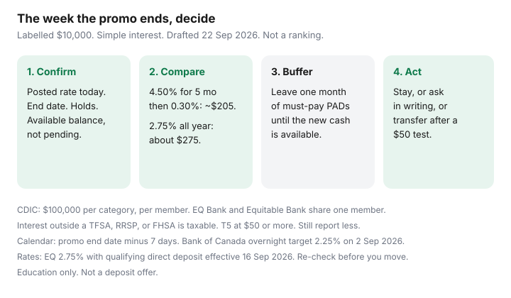

Personal Finance · Canada
Your HISA Promo Rate Just Dropped in Canada: A Same-Week Move Checklist
The promo email is polite. The rate is not. A household that opened a high-interest savings account for 4.50% in the spring can spend the autumn at a fraction of that, because nobody put the end date on a calendar. The cash is still “safe.” It is also earning less than the everyday account you ignored because the teaser looked better in month one.
This is a same-week checklist for when the rate has already dropped or drops in the next few days. It is not a product ranking and not a reason to chase the next billboard. Public rate paths below are the ones already date-stamped on our emergency-fund guide (issuer pages effective 16 Sep 2026 and Ratehub used 21 Sep 2026). Re-check the live number before you move money. Drafted 22 Sep 2026.
Disclosure: High-interest savings accounts and cash accounts are offer types. Saving Optimizer may later add partner links. We do not currently claim bank, fintech, or deposit-broker partnerships, and we do not invent live bonuses. This is education, not deposit advice. Confirm the rate, holds, and CDIC membership with the institution.
Key takeaways
- Read the new rate, the date it started, and any hold on transfers out. A screenshot beats a memory of the email.
- Compare 12-month yield, not the corpse of the teaser. A labelled $10,000 at 4.50% for five months and 0.30% for seven is about $205. The same $10,000 at 2.75% all year is about $275.
- Same week you either stay (everyday rate is fine), ask whether a retention rate exists in writing, or transfer. Do not leave it for “after the holidays.”
- Keep one month of must-pay bills liquid and unmoved until the new deposit shows as available. EQ has described EFT timing of 2–3 business days. Rent does not wait.
- Interest in a non-registered HISA is taxable. Inside a TFSA it is not, and a same-year withdrawal does not give the room back until 1 January. Emergency cash often belongs outside the TFSA.
Confirm the new rate, promo end date, and any transfer hold periods
Open the account, not the marketing page you bookmarked in April. Write four lines:
- Posted rate today, and whether it is “special,” “bonus,” or the everyday rate.
- The date the promo ended, from the original terms or the email. If you cannot find it, the rate on the screen is the only number that counts.
- Holds: a transfer in may be unavailable for several business days. A transfer out can be an EFT, an Interac e-Transfer with a limit, or a linked-account pull. EQ’s public materials have put EFT timing at 2–3 business days. Your screen may differ.
- Balance that is actually available today, separate from pending deposits.
The Bank of Canada held the overnight target at 2.25% on 2 September 2026. Deposit promos can still fall off a cliff while the policy rate sits still. The cliff is a contract end date, not a Bank of Canada announcement.
Compare like-for-like: advertised vs after-promo, fees, CDIC coverage
Three numbers, same balance, same 12 months, simple interest so you can do it on paper. Taxes and compounding come after you know the cliff is real.
| Path | Rate you can actually keep | Year sketch |
|---|---|---|
| You stay after a 5-month teaser | 4.50% for 5/12, then an everyday rate roundups have cited near 0.30% (Tangerine path — confirm tangerine.ca) | About $205 if the everyday rate is 0.30% |
| Everyday account, qualifying deposit | EQ Bank Personal Account 2.75% with $2,000 a month in qualifying direct deposits (1.00% base + 1.75% bonus) | About $275 |
| Everyday account, bonus missed | EQ base 1.00% if the direct-deposit test fails | About $100 |
| You hop to the next 5-month teaser and remember to leave | Only if you repeat this checklist on the new end date | Can beat 2.75%. Fails the month you forget. |
Add fees and access on the same row: monthly account fee, transfer fee, ATM rebates, and whether you can Interac the money on a Saturday. Twenty extra basis points you cannot reach when the furnace dies are not an emergency fund. CDIC insures eligible deposits at a member institution up to $100,000 per insurance category, per member, principal and interest. Two accounts at the same member in the same category do not double the cap. EQ Bank and Equitable Bank share one member. A fintech cash account may hold funds in trust at CDIC members rather than being a bank itself — read whose name is on the coverage, which is the framing in the EQ, Wealthsimple, and Tangerine comparison.

Same-week move options: stay, negotiate, or transfer
Pick one before the weekend. “Think about it” is how the low rate becomes a six-month habit.
- Stay when the post-promo rate is already close to the best everyday rate you can actually use, the cash is CDIC-eligible the way you need, and you can pull it without a game. Staying is a decision. Write the rate in the note so future-you knows you looked.
- Negotiate only in writing. Secure-message: “The promotional rate ended on [date]. The posted rate is now [rate]. Will you extend a rate, and until when, with no new minimum balance and no fee?” A phone promise that is not on the rate screen does not count. Do not move payroll or open a credit card to beg for 0.40%. That trade is how a savings task becomes a fee task.
- Transfer when the everyday rate elsewhere is clearly higher after fees, or when this institution’s post-promo rate is the 0.30% kind of number. Open or link the destination first. Send a small test ($50 to $100). When it shows as available, move the rest except the buffer in the next section.
Do not ladder the entire emergency fund into a non-redeemable GIC the week a promo dies. A GIC can sit beside a HISA for money you know you will not touch. It is a poor sole emergency account if breaking it costs the interest or a delay. The 12-month parking framework is the emergency-fund guide.
Keep an emergency buffer liquid while rates shop
Rate shopping is allowed. An empty chequing account on PAD morning is not. Leave one month of must-pay bills (rent or mortgage, utilities, insurance, childcare, minimums) where those PADs already work, until the destination balance is available and you have updated any bill that pulls from the old account.
Practical sequence:
- List PADs that hit in the next 14 days and the account they hit.
- Leave that sum plus a small cushion in the old account or in chequing.
- Transfer the surplus. Wait until it is available, not merely “processing.”
- Only then point new savings transfers at the winner. Payday automation stays one business day after payroll, which is pay yourself first.
If the old promo account and the new account are the same CDIC member and the same category, the move does not increase insurance. If you are over $100,000 in one category at one member, splitting members is the insurance question. Under that, access and the everyday rate matter more than a second logo.
Tax notes: interest is taxable outside registered accounts
Interest credited to a HISA that is not a TFSA, RRSP, or FHSA is taxable in the year it is paid or credited to you. Institutions issue a T5 when they pay $50 or more of interest. You still report interest under $50. A higher rate in a taxable account can beat a lower rate in a TFSA on after-tax dollars, or it can lose. Do the arithmetic with your marginal rate before you “hide” the emergency fund in a TFSA.
The trap is contribution room, not the tax slip. TFSA withdrawals do not create new room until 1 January of the next year. The 2026 dollar limit is $7,000. If you park emergency cash inside a TFSA and pull it for a repair, putting it back the same year without unused room is an excess, taxed at 1% a month. That mechanic is TFSA automation and TFSA withdrawals. EQ’s TFSA cash savings rate was 1.50% on 16 Sep 2026, below the unregistered 2.75% with direct deposit. For money you might need this year, the unregistered HISA is often the cleaner bucket.
Set a calendar reminder before the next promo cliff
The day you accept any new teaser, create one event: promo end date minus 7 days, titled with the account name and the everyday rate you will fall to if you do nothing. Invite the other adult in the household. The reminder is the product. A second teaser without that event is how this article becomes a habit.
On that day, rerun the four lines at the top: new rate, end date, holds, available balance. Then stay, ask in writing, or transfer. Same week. The Bank of Canada’s next decision may move everyday rates. It will not reliably email you that a 5-month bonus expired on a Tuesday.
Sources & date stamps
- CDIC — eligible deposits, $100,000 per category per member institution (framework used 22 Sep 2026).
- Bank of Canada — overnight target held at 2.25% on 2 September 2026, as cited on our HISA guide via Ratehub.
- Saving Optimizer HISA guide — EQ 2.75% / 1.00% effective 16 Sep 2026; Tangerine 4.50% for five months then an everyday rate roundups cite near 0.30%, Ratehub used 21 Sep 2026. Re-check issuer pages.
- EQ Bank TFSA cash savings 1.50% on 16 Sep 2026, from our TFSA automation guide.
- CRA — interest income is taxable outside registered accounts; TFSA room from a withdrawal returns on 1 January of the next year.
Frequently asked questions
The promo already ended last month. Is it too late to move?
No. Every week at the leftover rate is the cost of waiting. Confirm today’s posted rate, compare it with an everyday rate you can keep, leave one month of bills liquid, and transfer the surplus when a test deposit shows as available.
Should I chase the next 4% or 5% teaser?
Only if you will leave when it ends. A labelled $10,000 at 4.50% for five months and 0.30% for seven months is about $205, versus about $275 at 2.75% all year. Hopping wins if you actually hop. Put the end date minus seven days on the calendar the day you open it.
Will the bank raise my rate if I call?
Ask in writing and keep the reply. A spoken “we’ll see” is not a rate. Do not open a card or move payroll just to negotiate a savings rate. If the written answer is no, transfer.
Is HISA interest taxable in Canada?
Yes, outside a TFSA, RRSP, or FHSA. You report the interest for the year it is paid. A T5 is issued when the institution pays $50 or more. Interest inside a TFSA is not taxed, but using the TFSA as an emergency fund can create a same-year recontribution problem.
Does moving HISA cash between banks change CDIC coverage?
Coverage is $100,000 per category, per member institution. Moving from one member to another changes which member holds the deposit. Two products at the same member in the same category share one limit. EQ Bank and Equitable Bank share a member.